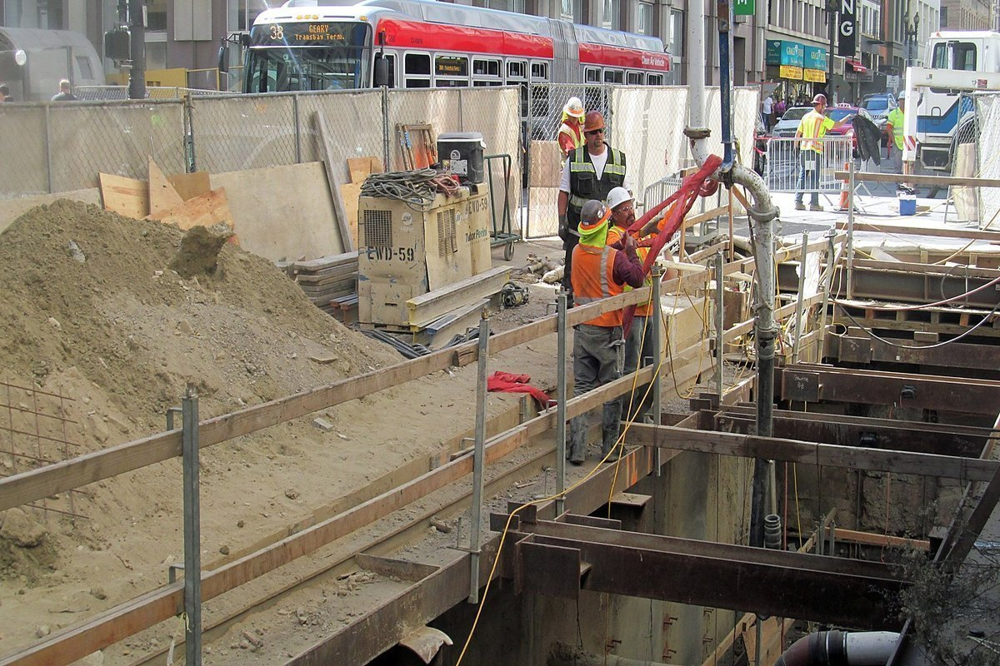

Driveways & crossovers
Fall set away from the house and garage, poured in one run where access allows, broom or exposed to suit the frontage.
Typical — 30 to 120 m²Driveways, house and shed slabs, exposed aggregate, paths and crossovers across Melbourne. Set out to the fall, steel chaired to cover, and finished by the same crew that walked the site.

Every job below is walked, explained and priced before anything is ordered. The size bands are the usual range — yours is measured on site.
Fall set away from the house and garage, poured in one run where access allows, broom or exposed to suit the frontage.
Typical — 30 to 120 m²Ground slabs and shed floors on a proof-rolled, compacted base with mesh chaired to cover, sawn the next day.
Typical — 20 to 200 m²Topped with aggregate and washed back evenly across the whole pour, so the stone reads the same front to back.
Typical — 30 to 150 m²Paths, entertaining areas and side access kept level and drained so water leaves the building rather than sitting against it.
Typical — 10 to 60 m²Oxide colour through the batch and stencil patterns, for driveways that have to match brick, render or roof tones.
By designCracked, sunken or spalled concrete broken out, the base re-compacted and the slab replaced rather than patched over.
Quoted on siteThe finish decides how a driveway grips, how it ages and what it costs to keep. These four cover almost every job.
Concrete cannot be quoted accurately from a phone call. Two driveways the same length are different jobs once depth, access and reinforcement are counted — so the price is built from the four things below.
Send photos and rough measurements and the first number comes back the same day. The measured price follows the site check.
Based in Melbourne, pouring across the north and north-west metro. If your suburb is not listed, ask — the border shifts with the job.
Suburb, rough size, what the slab is for and how close a truck can get. Photos of the site cut a visit off the process.